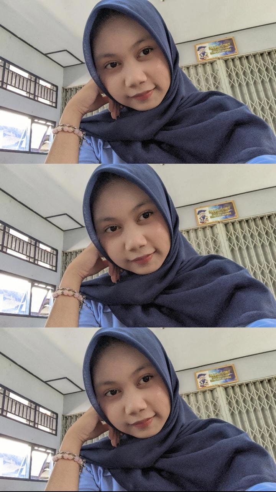
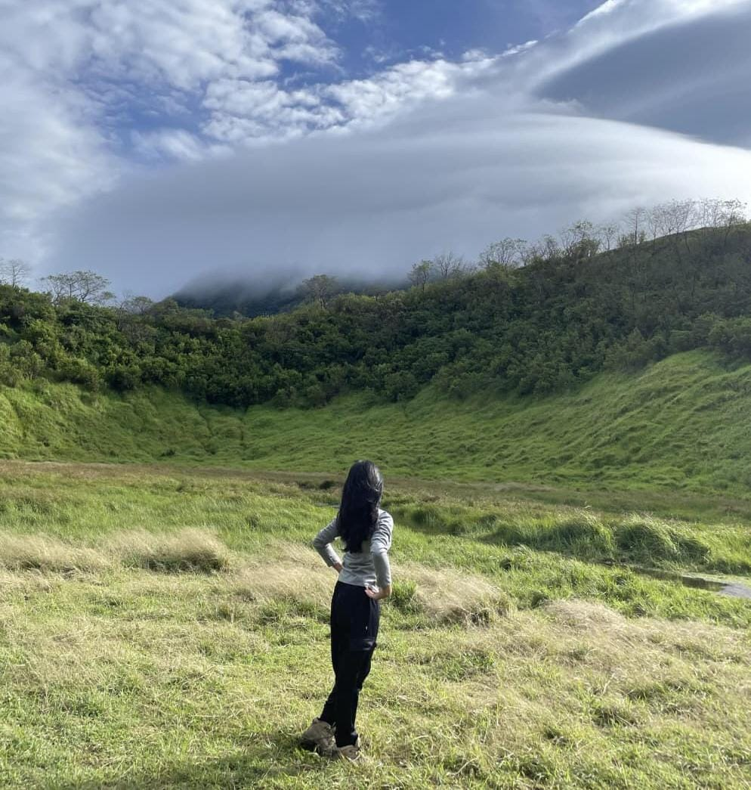
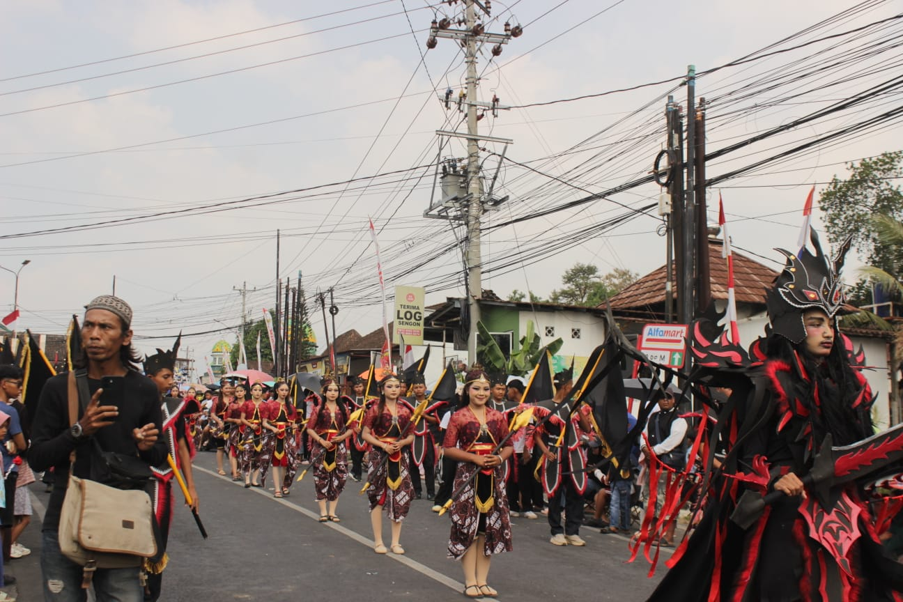
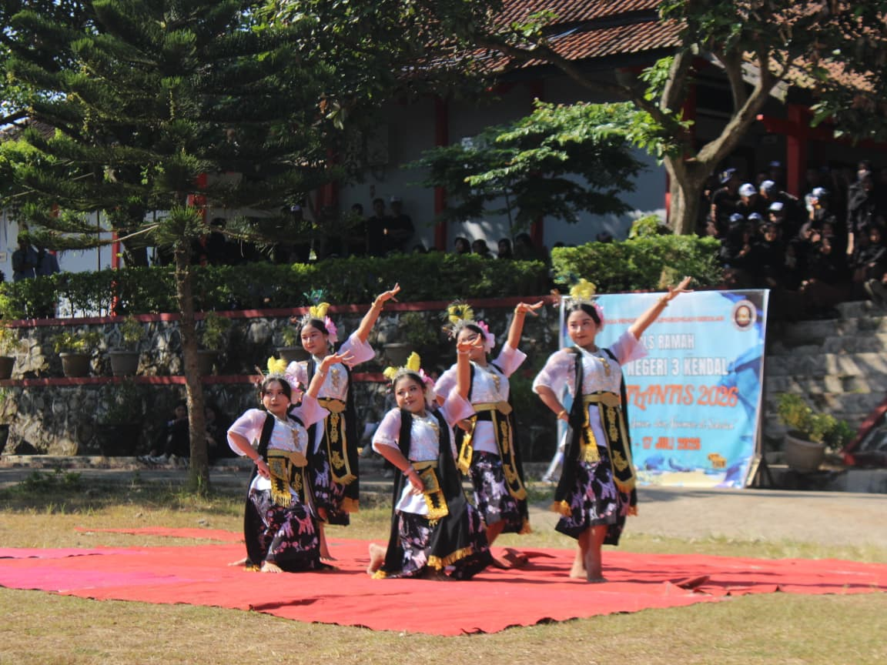
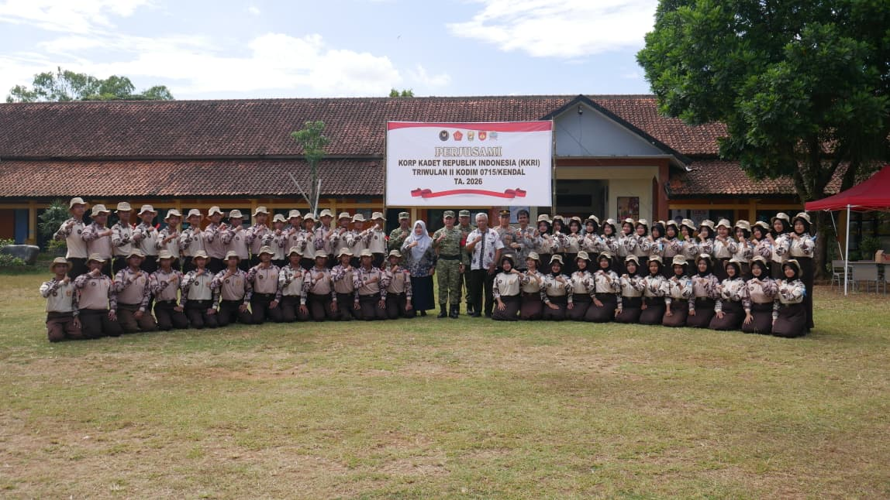

Nama saya Freda Zahra Prasetya. Saya merupakan siswi SMK Negeri 3 Kendal kelas XI RPL 2. Saya mengambil jurusan Rekayasa Perangkat Lunak (RPL). Saya senang mempelajari HTML, CSS, dan pembuatan website sederhana. Saya juga senang mencoba hal-hal baru yang dapat menambah pengalaman dan kemampuan saya. Cita-cita saya adalah menjadi guru.

| Nama | : Freda Zahra Prasetya |
| Tempat, Tanggal Lahir | : Kendal, 30 Maret 2010 |
| Jenis Kelamin | : Perempuan |
| Alamat | : Grajegan Tampingan RT04/RW02, Boja, Jawa Tengah |
| Kelas | : XI RPL 2 |
| Sekolah | : SMK Negeri 3 Kendal |
| Jurusan | : Rekayasa Perangkat Lunak |
| Hobi | : Menari, Hiking, Mendengarkan musik, Menonton film |
| Cita-cita | : Guru |

Foto Pribadi

Kegiatan Sekolah

Kegiatan Bersama Teman

Kegiatan Organisasi
Saya adalah seorang siswi yang memiliki rasa ingin tahu cukup tinggi dan senang mempelajari sesuatu yang baru. Saya tertarik dengan dunia teknologi terutama dalam bidang pembuatan website.
Menurut saya, belajar bukan hanya dilakukan di dalam kelas, tetapi juga melalui pengalaman, organisasi, kerja sama dengan teman, dan berbagai kegiatan lainnya.
Saya berusaha menjadi pribadi yang bertanggung jawab, disiplin, ramah, dan dapat bekerja sama dengan orang lain. Saya juga ingin terus mengembangkan kemampuan saya agar dapat mencapai cita-cita menjadi guru.
Pelatihan yang pernah diikuti:
| No | Nama Organisasi | Jabatan | Tahun |
|---|---|---|---|
| 1 | PMR | Anggota | 2022 - 2024 |
| 2 | KIR | Anggota | 2022 - 2023 |
| 3 | Paskibra | Anggota | 2025 - Sekarang |
| 4 | Sanggar Tari | Anggota | 2020 - Sekarang |
Membuat website profile pribadi dengan menggunakan HTML dan CSS.
Membuat website perpustakaan sederhana untuk menampilkan informasi dan data buku.
Membuat flowchart untuk menggambarkan alur proses dari sebuah sistem.
Membuat ERD dan DFD sebagai bagian dari perancangan sistem dan database.
Membuat rancangan tampilan website yang sederhana, menarik, dan mudah digunakan.
Membuat desain poster dan berbagai desain sederhana untuk tugas maupun kegiatan sekolah.